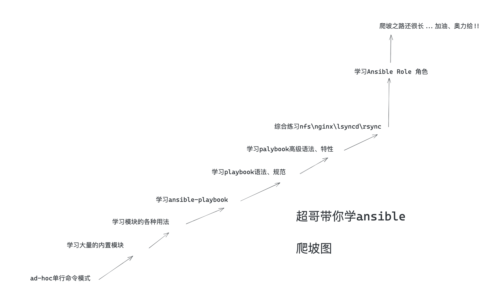
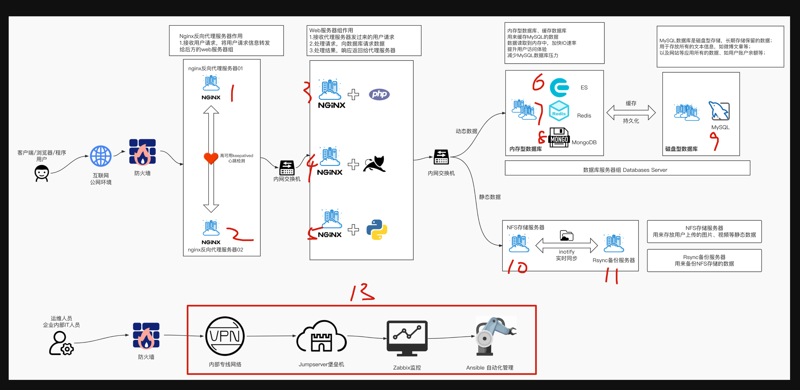
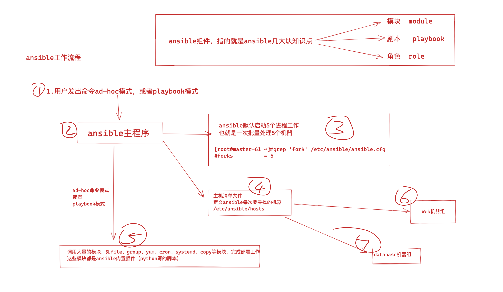
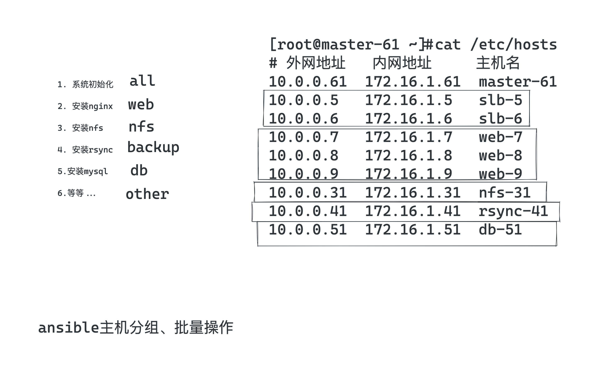
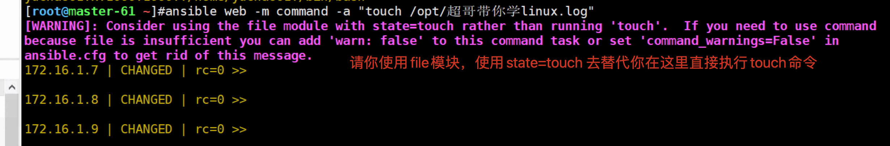
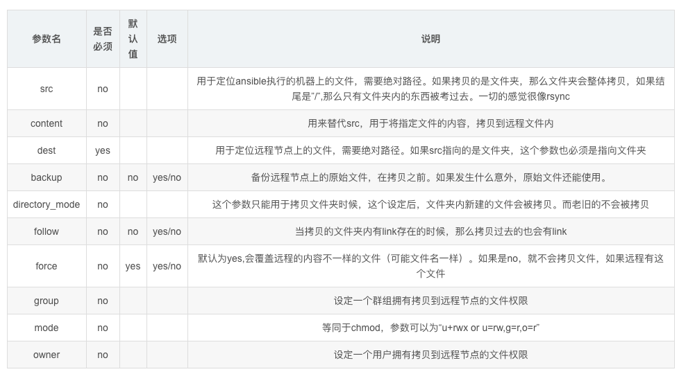
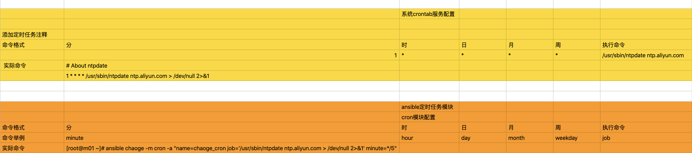
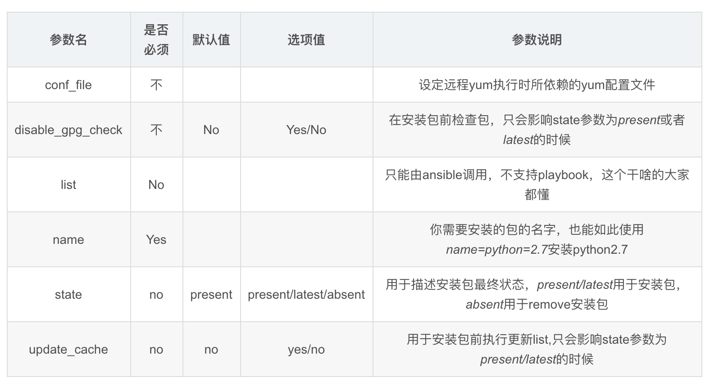
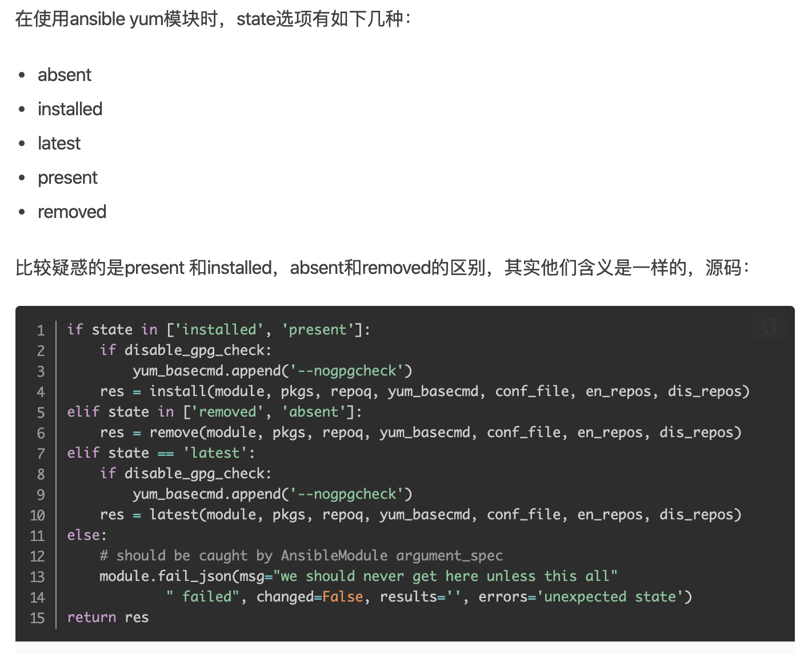

11-运维自动化Ansible

1、ansible介绍
运维神器ansible

一句话，学好ansible，学精ansible，就直接是普通运维、和自动化运维的一个质的飞跃。
ansible提供了大量的模块、帮助运维完成服务器批量化部署操作，ansible你可以理解为这个是一个工具箱，这个工具是用来解决其他各种问题的。
1.冰箱坏了，你可以用螺丝刀自己慢慢拧，你也可以选择用电钻，几秒钟搞定
2.你要部署一台新nginx机器，你可以选择手动登录，逐条命令部署，你也可以用ansible几条命令搞定，并且可以复用，一瞬间搞定500台、5万台机器。
人工运维时代
运维人员大多需要维护数量众多的机器，反复重复的劳动力，很多机器需要同时部署相同的服务或是执行命令，还得反复登录不同的机器执行。
例如在backup服务器上部署Rsync服务，需要在所有其他的服务器上部署Rsync客户端配置一遍。
一台台机器登录执行命令实在太繁琐，运维人员也常用Xshell、SecureCRT之类的工具添加多个服务器的标签，提高快速连接服务器的效率。
自动化运维时代
SSH自动化运维时代是指2003~2012年，当时SSH自动化运维是很流行的，通过再管理机器统一创建秘钥对，将私钥留在管理机上，公钥发到所有被管理的机器，然后开发脚本实现批量管理。
系统管理员日常会进行大量的重复性操作，例如安装软件，修改配置文件，创建用户，批量执行命令等等。
如果主机数量庞大，单靠人工维护实在让人难以忍受。
早期运维人员会根据自己的生产环境来写特定脚本完成大量重复性工作，这些脚本复杂且难以维护。
系统管理员面临的问题主要是
1、系统配置管理
2、远程执行命令，因此诞生了很多开源软件，系统维护方面有fabric、puppet、chef、ansible、saltstack等，这些软件擅长维护系统状态或方便的对大量主机进行批量的命令执行。
python由此抗住了运维自动化的一片天，风靡了很久
其中有两款软件都是用Python语言开发的，也就是saltstack、ansible，学习简单，功能强大。
自动化运维趋势
如今的自动化运维，不再是一个批量自动化管理软件就可以解决所有问题了，运维管理高速发展，从人肉运维到自动化运维，再到数据化运维、可视化运维、到AI智能运维，运维界倡导DevOps、AIOps运维，前景十分广阔，给用户更广阔的施展空间。
自动化运维好处
- 提高工作效率，减少重复性工作
- 大大减少人为出错的可能性
- 数据化管理、数据化汇报、问题可追溯
Ansible介绍
Ansible是一个同时管理多个远程主机的软件（任何可以通过SSH协议登录的机器），因此Ansible可以管理远程虚拟机、物理机，也可以是本地主机（linux、windows）。
Ansible通过SSH协议实现管理节点、远程节点的通信。
只要是能够SSH登录的主机完成的操作，都可以通Ansible自动化操作，比如批量复制、批量删除、批量修改、批量查看、批量安装、重启、更新等。
1.ansible是基于python语言开发的自动运维工具（由于python是解释型的特点，机器上必须要安装python运行环境）
2.ansible基于ssh协议实现安全通信。
为什么需要ansible
1.批量部署、批量执行命令
2.统一配置管理，模板管理
3.批量收集被管理机器的信息
4.批量分发文件
5.等等等...
如何学习ansible
1.打开ansible官网，查看所有最新的功能，不要看其他的文档，可能已经很陈旧了，python3也已经更新了很多，导致用法变化等。
https://docs.ansible.com/ansible/latest/
最新官网文档
2.你可能要执行的各种命令，ansible都提供了模块，如文件拷贝，如软件安装，服务重启等；
3.你使用ansible，必须严格按照ansible提供的语法来，否则只有报错
4.先学语法，语法基本功扎实后，面对千变万化的需求，才能游刃有余
5.多动手，ansible需要记忆的操作比较多
Ansible特点
Ansible的编排引擎可以出色的完成配置管理、流程控制、资源部署等多方面的操作。和其他IT自动化产品比较，Ansible无须安装客户端软件，管理简便，功能强大，便于维护。
Ansible基于Python开发，由主要的Paramiko和PyYAML两个关键模块构建。
- 安装部署简单，学习曲线平坦
- 管理主机便捷，支持多台主机并行管理
- 无须单独在被管理主机上安装客户端软件（no agents），无须占用其他端口，仅利用SSH服务工作。
- 远程执行安全，轻松对执行的内容进行审计、评估、重写
- 能够立即管理远程主机，无须事先安装任何客户端。
- 不仅支持python、还可以使用其他语言开发模块。
- 非root账户可用
- 不需要安装服务端(no servers)，不需要守护进程服务
- 有活跃的官方社区
在云计算时代，基础架构必须满足按需自动伸缩、按使用量计费的基本特性，因此自动化运维软件是必备的工具之一。
Anisble架构

Anisble命令语法
ansible批量管理命令主要涉及6部分
- ansible主命令
- 指定ansible管理的主机信息，可以是主机组名、主机ip地址、或是
all - 调用ansible的模块参数
-m - 指定用哪一个功能模块，模块的名字，如shell模块
- 调用对应模块的功能参数，-a
- 执行对应模块中的哪些功能，如hostname
ansible是新出现的自动化运维工具，基于Python开发，集合了众多运维工具（puppet、cfengine、chef、func、fabric）的优点，实现了批量系统配置、批量程序部署、批量运行命令等功能。
Options:
-a MODULE_ARGS, --args=MODULE_ARGS
#module arguments
#指定执行模块使用的参数
--ask-vault-pass
#ask for vault password
#加密playbook文件时提示输入密码
-B SECONDS, --background=SECONDS
#run asynchronously, failing after X seconds(default=N/A)
#后台运行超时时间,异步运行，X秒之后失败
-C, --check
#don't make any changes; instead, try to predict some of the changes that may occur
#模拟执行，不会真正在机器上执行(查看执行会产生什么变化)
-D, --diff
#when changing (small) files and templates, show the differences in those files; works great with --check
#当更新的文件数及内容较少时，该选项可显示这些文件不同的地方，该选项结合-C用会有较好的效果
-e EXTRA_VARS, --extra-vars=EXTRA_VARS
#set additional variables as key=value or YAML/JSON
#执行命令时添加额外参数变量
-f FORKS, --forks=FORKS
#specify number of parallel processes to use(default=5)
#并行任务数。FORKS被指定为一个整数,默认是5
-h, --help
#show this help message and exit
#打开帮助文档API
-i INVENTORY, --inventory-file=INVENTORY
#specify inventory host path(default=/etc/ansible/hosts) or comma separated host list.
#指定要读取的Inventory文件
-l SUBSET, --limit=SUBSET
#further limit selected hosts to an additional pattern
#限定执行的主机范围
--list-hosts
#outputs a list of matching hosts; does not execute anything else
#列出执行匹配到的主机，但并不会执行
-m MODULE_NAME, --module-name=MODULE_NAME
#module name to execute (default=command)
#指定执行使用的模块，默认使用 command 模块
-M MODULE_PATH, --module-path=MODULE_PATH
#specify path(s) to module library (default=None)
#要执行的模块的路径
--new-vault-password-file=NEW_VAULT_PASSWORD_FILE
#new vault password file for rekey
#
-o, --one-line
#condense output
#压缩输出，摘要输出.尝试一切都在一行上输出
--output=OUTPUT_FILE
#output file name for encrypt or decrypt; use - for stdout
#
-P POLL_INTERVAL, --poll=POLL_INTERVAL
#set the poll interval if using -B (default=15)
#设置轮询间隔，每隔数秒。需要- B
--syntax-check
#perform a syntax check on the playbook, but do not execute it
#检查Playbook中的语法书写
-t TREE, --tree=TREE
#log output to this directory
#将日志内容保存在该输出目录,结果保存在一个文件中在每台主机上
--vault-password-file=VAULT_PASSWORD_FILE
#vault password file
#
-v, --verbose
#verbose mode (-vvv for more, -vvvv to enable connection debugging)
#执行详细输出
--version
#show program's version number and exit
#显示版本
Connection Options:
control as whom and how to connect to hosts
-k, --ask-pass
#ask for connection password
#
--private-key=PRIVATE_KEY_FILE, --key-file=PRIVATE_KEY_FILE
#use this file to authenticate the connection
#
-u REMOTE_USER, --user=REMOTE_USER
#connect as this user (default=None)
#指定远程主机以USERNAME运行命令
-c CONNECTION, --connection=CONNECTION
#connection type to use (default=smart)
#指定连接方式，可用选项paramiko (SSH)、ssh、local，local方式常用于crontab和kickstarts
-T TIMEOUT, --timeout=TIMEOUT
#override the connection timeout in seconds(default=10)
#SSH连接超时时间设定，默认10s
--ssh-common-args=SSH_COMMON_ARGS
#specify common arguments to pass to sftp/scp/ssh (e.g.ProxyCommand)
#
--sftp-extra-args=SFTP_EXTRA_ARGS
#specify extra arguments to pass to sftp only (e.g. -f, -l)
#
--scp-extra-args=SCP_EXTRA_ARGS
#specify extra arguments to pass to scp only (e.g. -l)
#
--ssh-extra-args=SSH_EXTRA_ARGS
#specify extra arguments to pass to ssh only (e.g. -R)
#
Privilege Escalation Options:
control how and which user you become as on target hosts
-s, --sudo
#run operations with sudo (nopasswd) (deprecated, use become)
#相当于Linux系统下的sudo命令
-U SUDO_USER, --sudo-user=SUDO_USER
#desired sudo user (default=root) (deprecated, use become)
#使用sudo，相当于Linux下的sudo命令
-S, --su
#run operations with su (deprecated, use become)
#
-R SU_USER, --su-user=SU_USER
#run operations with su as this user (default=root) (deprecated, use become)
#
-b, --become
#run operations with become (does not imply password prompting)
#
--become-method=BECOME_METHOD
#privilege escalation method to use (default=sudo),valid choices: [ sudo | su | pbrun | pfexec | doas |dzdo | ksu | runas ]
#
--become-user=BECOME_USER
#run operations as this user (default=root)
#
--ask-sudo-pass
#ask for sudo password (deprecated, use become)
#
--ask-su-pass
#ask for su password (deprecated, use become)
#
-K, --ask-become-pass
#ask for privilege escalation password
#
2、ansible安装部署
在master-61管理机安装
[root@master-61 ~]#yum install epel-release ansible libselinux-python -y
[root@master-61 ~]#ansible --version
ansible 2.9.27
config file = /etc/ansible/ansible.cfg
configured module search path = [u'/root/.ansible/plugins/modules', u'/usr/share/ansible/plugins/modules']
ansible python module location = /usr/lib/python2.7/site-packages/ansible
executable location = /usr/bin/ansible
python version = 2.7.5 (default, Apr 11 2018, 07:36:10) [GCC 4.8.5 20150623 (Red Hat 4.8.5-28)]
主机清单文件（主机分组）

主机清单配置文件
[root@master-61 ~]#tail -10 /etc/ansible/hosts
[web]
172.16.1.7
172.16.1.8
[nfs]
172.16.1.31
[backup]
172.16.1.41
主机分组后，执行命令测试，批量管理一组机器
ansible主机登录认证
Ansible批量管理主机有两种方式：
- 传统的密码认证
- 密钥管理
这里参考于超老师上一节讲解的ssh服务，所有的机器配置好公私钥登录，即可免密码操作
ansible基于公私钥认证
[root@master-61 ~]#ansible web -m ping
172.16.1.8 | SUCCESS => {
"ansible_facts": {
"discovered_interpreter_python": "/usr/bin/python"
},
"changed": false,
"ping": "pong"
}
172.16.1.7 | SUCCESS => {
"ansible_facts": {
"discovered_interpreter_python": "/usr/bin/python"
},
"changed": false,
"ping": "pong"
}
基于密码认证
- 在你的客户端机器、修改了ssh默认端口、以及密码需要修改主机清单文件才可以正确连接。
- 注意你得配置允许密码登录才能进行如下测试，可以再开一个web-9机器。
ansible主机清单配置文件语法（重要）
注意，部分资料里的主机配置文件语法，旧版如下
Ansible 2.0 has deprecated the “ssh” from ansible_ssh_user, ansible_ssh_host, and ansible_ssh_port to become
新版参数
ansible_user
ansible_host
ansible_port
新版参数
| 参数 | 参数类型 | 参数说明 |
|---|---|---|
| ansible_host | 主机地址 | 远程主机ip |
| ansible_port | 主机端口 | 设置SSH连接端口，默认22 |
| ansible_user | 主机用户 | 默认SSH远程连接的用户身份 |
| ansible_password | 用户密码 | 指定SSH远程主机密码 |
添加rsync机器的ssh信息
Ansible软件使用的前提是SSH+KEY免密验证的环境，如果没有配置也可以使用Ansible，如下
[root@master-61 ~]#tail -2 /etc/ansible/hosts
[backup]
172.16.1.41 ansible_port=22999 ansible_user=root ansible_password=123123
测试执行
[root@master-61 ~]#ansible backup -m ping
172.16.1.41 | SUCCESS => {
"ansible_facts": {
"discovered_interpreter_python": "/usr/bin/python"
},
"changed": false,
"ping": "pong"
}
添加web机器组的信息
[root@master-61 ~]#tail /etc/ansible/hosts
[web]
172.16.1.7 ansible_port=22999 ansible_user=root ansible_password=123123
172.16.1.8 ansible_port=22999 ansible_user=root ansible_password=123123
[nfs]
172.16.1.31
[backup]
172.16.1.41 ansible_ssh_port=22999 ansible_ssh_user=root ansible_ssh_pass=123123
测试执行
[root@master-61 ~]#ansible web -m ping
172.16.1.8 | SUCCESS => {
"ansible_facts": {
"discovered_interpreter_python": "/usr/bin/python"
},
"changed": false,
"ping": "pong"
}
172.16.1.7 | SUCCESS => {
"ansible_facts": {
"discovered_interpreter_python": "/usr/bin/python"
},
"changed": false,
"ping": "pong"
}
拿web-9机器测试（单独操作某主机）
[root@master-61 ~]#tail /etc/ansible/hosts
[web]
172.16.1.7 ansible_ssh_port=22999 ansible_ssh_user=root ansible_ssh_pass=1231213
172.16.1.8 ansible_ssh_port=22999 ansible_ssh_user=root ansible_ssh_pass=123123
172.16.1.9 ansible_ssh_port=22 ansible_ssh_user=root ansible_ssh_pass=yuchao666
[nfs]
172.16.1.31
[backup]
172.16.1.41 ansible_ssh_port=22999 ansible_ssh_user=root ansible_ssh_pass=123123
故障解决
你可能会遇见如下问题，关于新机器的指纹确认问题。
[root@master-61 ~]#
[root@master-61 ~]#ansible 172.16.1.9 -m ping
172.16.1.9 | FAILED! => {
"msg": "Using a SSH password instead of a key is not possible because Host Key checking is enabled and sshpass does not support this. Please add this host's fingerprint to your known_hosts file to manage this host."
}
解决办法1，手动ssh连接，进行指纹确认，写入到本机的
[root@master-61 ~]#cat ~/.ssh/known_hosts
解决办法2，ansible配置文件中忽略指纹确认
[root@master-61 ~]#grep 'host_key_checking' /etc/ansible/ansible.cfg
host_key_checking = False
问题以及解决，可以正确操作web-9机器
[root@master-61 ~]#ansible 172.16.1.9 -m ping
172.16.1.9 | SUCCESS => {
"ansible_facts": {
"discovered_interpreter_python": "/usr/bin/python"
},
"changed": false,
"ping": "pong"
}
踩坑记录(ansible缓存)
由于ansible在对远程主机操作之前，默认会先通过setup模块获取机器的facts（静态属性），并且会生成缓存，便于加速远程主机的操作；
但缓存也会导致一些奇怪的现象，比如客户端的机器信息更新了，服务端依旧使用的是旧数据，那就不准确了，因此可以删除缓存。
关于缓存导致bug的文章，https://serverfault.com/questions/630253/ansible-stuck-on-gathering-facts
清理ansible的缓存目录即可
[root@master-61 ~]#rm -rf ~/.ansible/cp/*
同一组连续的ip
可以修改主机清单文件如下，前提是该些主机的配置一致
[web]
172.16.1.[7:9]
公共变量
当主机清单里，很多主机组，有相同的变量属性，可以写成公共变量
这部分配置是针对web主机组，抽象的变量
[root@master-61 ~]#grep -vE '^#|^$' /etc/ansible/hosts
[web:vars]
ansible_ssh_port=22999
ansible_ssh_user=root
ansible_ssh_pass=123123
[web]
172.16.1.[7:9]
[nfs]
172.16.1.31 ansible_ssh_port=22999
[backup]
172.16.1.41 ansible_ssh_port=22999 ansible_ssh_user=root ansible_ssh_pass=123123
测试
[root@master-61 ~]#ansible web -m ping
172.16.1.7 | SUCCESS => {
"ansible_facts": {
"discovered_interpreter_python": "/usr/bin/python"
},
"changed": false,
"ping": "pong"
}
172.16.1.8 | SUCCESS => {
"ansible_facts": {
"discovered_interpreter_python": "/usr/bin/python"
},
"changed": false,
"ping": "pong"
}
172.16.1.9 | SUCCESS => {
"ansible_facts": {
"discovered_interpreter_python": "/usr/bin/python"
},
"changed": false,
"ping": "pong"
}
# 获取主机名
[root@master-61 ~]#ansible web -m shell -a hostname
172.16.1.9 | CHANGED | rc=0 >>
web-9
172.16.1.8 | CHANGED | rc=0 >>
web-8
172.16.1.7 | CHANGED | rc=0 >>
web-7
所有主机都生效的变量(最终版)
指定主机组名all，即可针对所有主机生效，前提是，你要确保这个信息是所有主机通用的。
[root@master-61 ~]#grep -vE '^#|^$' /etc/ansible/hosts
[all:vars]
ansible_port=22999
#ansible_user=root
#ansible_password=123123
[web]
172.16.1.7
172.16.1.8
172.16.1.9
[nfs]
172.16.1.31
[backup]
172.16.1.41
远程执行命令
[root@master-61 ~]#rm -rf ~/.ansible/cp/*
[root@master-61 ~]#
[root@master-61 ~]#ansible all -m shell -a hostname
[root@master-61 ~]#ansible all -m shell -a hostname
172.16.1.31 | CHANGED | rc=0 >>
nfs-31
172.16.1.8 | CHANGED | rc=0 >>
web-8
172.16.1.41 | CHANGED | rc=0 >>
rsync-41
172.16.1.7 | CHANGED | rc=0 >>
web-7
172.16.1.9 | CHANGED | rc=0 >>
web-9
3、ansible命令执行方式
Ansible实现批量管理主机的模式主要有俩：
- 利用ansible命令实现批量管理（ad-hoc）模式
- 利用ansible剧本实现批量管理（playbook）模式
Ad-hoc和playbook的关系就好比shell命令与shell scripts的关系
ad-hoc模式
Ansible的ad-hoc模式也就是ansible的命令行模式，该模式通常用来临时处理一些任务。例如
- 临时批量查看所有被管控机器的内存、负载、磁盘
- 临时批量分发某个特定文件
Playbook模式
Ansible的playbook模式就是针对特定的具体较大的任务，事先写好执行剧本，然后在其他机器上批量执行相同的任务，属于定制化的批量执行任务，例如
- 一键安装Rsync
- 一键搭建LNMP集群等
ansible-doc命令
列出ansible所有支持的模块，这就是ansible这个万能工具箱所有的零件了。
[root@master-61 ~]#ansible-doc -l |grep ^ping
ping Try to connect to host, verify a usable python and re...
pingdom Pause/unpause Pingdom alerts
[root@master-61 ~]#ansible-doc -l |grep ^shell
shell
当前ansible支持3387个模块
[root@master-61 ~]#ansible-doc -l |wc -l
3387
当前ansible支持的模块数量
[root@master-61 ~]#ansible-doc -l |wc -l
3387
查看某个模块的具体用法
[root@master-61 ~]#ansible-doc -s shell
[root@master-61 ~]#ansible-doc -s ping
4、ansible核心内容（模块学习）
ansible执行命令结果（状态颜色）
绿色：命令以用户期望的执行了，但是状态没有发生改变；
黄色：命令以用户期望的执行了，并且状态发生了改变；
紫色：警告信息，说明ansible提示你有更合适的用法；
红色：命令错误，执行失败；
蓝色： 详细的执行过程；
官网文档
如果说学ansible该去哪找正确玩法
1.看官网
2.看于超老师博客（😄）
https://docs.ansible.com/ansible/latest/collections/ansible/builtin/index.html#plugins-in-ansible-builtin
Ansible自动化软件的核心功能就在于其众多的模块，可以说学习Ansible就是学习模块的使用。
剩余的是对Ansible剧本编写的熟练度。
4.1 ping测试连通性
命令语法
ansible 主机组 -m 模块名 [模块参数]
查看模块解释
[root@master-61 ~]#ansible-doc -s ping
- name: Try to connect to host, verify a usable python and return `pong' on success
ping:
data: # Data to return for the `ping' return value. If this parameter is set to `crash', the
module will cause an exception.
[root@master-61 ~]#
执行
[root@master-61 ~]#ansible web -m ping
172.16.1.8 | SUCCESS => {
"ansible_facts": {
"discovered_interpreter_python": "/usr/bin/python"
},
"changed": false,
"ping": "pong"
}
172.16.1.9 | SUCCESS => {
"ansible_facts": {
"discovered_interpreter_python": "/usr/bin/python"
},
"changed": false,
"ping": "pong"
}
172.16.1.7 | SUCCESS => {
"ansible_facts": {
"discovered_interpreter_python": "/usr/bin/python"
},
"changed": false,
"ping": "pong"
}
4.2 command 简单命令模块
语法
[root@master-61 ~]#ansible-doc -s command
ansible 主机组 -m command -a "需要批量执行的命令"
该模块作用：在远程节点上执行一个命令
command模块是ansible命令基本模块
- 使用command模块执行远程命令，命令不得用变量（$HOME）
- 不得出现特殊符号
< 、>、|、；、&，否则无法识别，需要则使用shell模块实现- 也就是无法使用复杂的linux命令
远程查看主机名
[root@master-61 ~]#ansible web -m command -a hostname
172.16.1.7 | CHANGED | rc=0 >>
web-7
172.16.1.9 | CHANGED | rc=0 >>
web-9
172.16.1.8 | CHANGED | rc=0 >>
web-8
简写，command是ansible的基础模块，默认就是-m command
[root@master-61 ~]#ansible web -a hostname
172.16.1.7 | CHANGED | rc=0 >>
web-7
172.16.1.9 | CHANGED | rc=0 >>
web-9
172.16.1.8 | CHANGED | rc=0 >>
web-8
查看远程主机内存
[root@master-61 ~]#ansible web -m command -a "free -m"
远程创建文件、查看文件

[root@master-61 ~]#ansible web -m command -a "touch /opt/超哥带你学linux.log"
[root@master-61 ~]#ansible web -m command -a "ls /opt/"
远程获取机器负载
[root@master-61 ~]#ansible web -m command -a "uptime"
关闭告警信息
[root@master-61 ~]#ansible web -m command -a "touch /opt/超哥带你学linux.log warn=False"
在所有机器上，创建yuchao01用户
[root@master-61 ~]#ansible all -m command -a 'useradd yuchao01'
[root@master-61 ~]#ansible all -m command -a 'grep yuchao01 /etc/passwd'
使用command提供的专有命令
这些命令用于编写ansible-playbook，完成服务器部署的各种复杂条件限定。
| 选项参数 | 选项说明 |
|---|---|
| chdir | 在执行命令执行，通过cd命令进入指定目录 |
| creates | 定义一个文件是否存在，若不存在，则运行相应命令；存在则跳过 |
| free_form（必须） | 参数信息中可以输入任何系统命令，实现远程管理 |
| removes | 定义一个文件是否存在，如果存在，则运行相应命令；如果不存在则跳过 |
Command练习
备份/var/log日志目录
[root@master-61 ~]#ansible backup -m command -a "tar -zcf /opt/log.tgz var/log chdir=/"
在/opt下创建chaoge666.log
[root@master-61 ~]#ansible backup -m command -a "touch chaoge666.log chdir=/opt"
备份/etc所有配置文件到 /backup_config/etc.tgz 。练习removes命令
1.这里就得提前考虑 /backup_config文件夹是否存在，必须先有文件夹，才能执行该备份命令
2.判断如果该文件夹不存在，则不执行备份
[root@master-61 ~]#ansible backup -m command -a 'tar -zcf /backup_config/etc.tgz removes=/backup_config'
172.16.1.41 | SUCCESS | rc=0 >>
skipped, since /backup_config does not exist
3.你必须先创建该文件夹
[root@master-61 ~]#ansible backup -m command -a 'mkdir /backup_config'
4.再次执行该命令
[root@master-61 ~]#ansible backup -m command -a 'tar -zcf /backup_config/etc.tgz /etc removes=/backup_config'
测试creates命令，如果目标目录已经存在了，就别创建该目录了
[root@master-61 ~]#ansible backup -m command -a 'mkdir /opt creates=/opt'
172.16.1.41 | SUCCESS | rc=0 >>
skipped, since /opt exists
执行命令，且忽略警告，要求你已经确认该命令是无误的。
[root@master-61 ~]#ansible backup -m command -a 'touch /home/于超老师带你学ansible.log warn=False'
172.16.1.41 | CHANGED | rc=0 >>
远程过滤进程信息，无法使用
[root@master-61 ~]#ansible backup -m command -a 'ps -ef|grep ssh'
4.3 shell模块（万能模块）
shell模块功能：在远程节点上执行命令（复杂的命令）
也就是等于你在linux上直接执行任何复杂的命令都可以，但是ansible的使用理念是，人家提供了几千个模块，并且有很复杂的功能，你在用shell模块之前，先查一查是否有对应的模块。
Shell练习
远程过滤ssh进程信息
[root@master-61 ~]#
[root@master-61 ~]#ansible backup -m shell -a 'ps -ef|grep ssh'
172.16.1.41 | CHANGED | rc=0 >>
root 2088 1 0 16:34 ? 00:00:00 sshd: root@pts/0
root 2128 1 0 16:37 ? 00:00:00 /usr/sbin/sshd -D
root 3951 2128 0 19:36 ? 00:00:00 sshd: root@pts/1
root 5907 2128 0 19:57 ? 00:00:00 sshd: root@pts/2
root 6099 6098 0 19:58 pts/2 00:00:00 /bin/sh -c ps -ef|grep ssh
root 6101 6099 0 19:58 pts/2 00:00:00 /bin/sh -c ps -ef|grep ssh
使用重定向符号，创建文件
[root@master-61 ~]#ansible backup -m shell -a "echo 超哥带你学ansible >> /tmp/t1.log"
172.16.1.41 | CHANGED | rc=0 >>
[root@master-61 ~]#ansible backup -m shell -a "echo 超哥带你学ansible >> /tmp/t1.log"
172.16.1.41 | CHANGED | rc=0 >>
[root@master-61 ~]#ansible backup -m shell -a "cat /tmp/t1.log"
172.16.1.41 | CHANGED | rc=0 >>
超哥带你学ansible
超哥带你学ansible
远程执行复杂linux命令
这个命令就无法在command中执行
通过一条命令，做如下事情
- 创建文件夹
- 生成sh脚本文件
- 赋予脚本可执行权限
- 执行脚本
- 忽略warning信息
[root@master-61 ~]#ansible backup -m shell -a "mkdir -p /server/scripts/;echo 'hostname' > /server/scripts/hostname.sh;chmod +x /server/scripts/hostname.sh;/usr/bin/bash /server/scripts/hostname.sh"
[WARNING]: Consider using the file module with state=directory rather than running 'mkdir'. If you need to use command
because file is insufficient you can add 'warn: false' to this command task or set 'command_warnings=False' in
ansible.cfg to get rid of this message.
172.16.1.41 | CHANGED | rc=0 >>
rsync-41
小结shell模块
shell命令别过度依赖，那就等于用ansible远程帮你执行了个普通的shell命令；
你应该多去琢磨其他模块，如文件模块、拷贝模块，脚本模块，定时任务模块，yum模块等等等。
4.4 copy拷贝文件
copy模块是远程推送数据模块，只能把数据推送给远程主机节点，无法拉取数据到本地。
既然是文件拷贝，可用参数也就是围绕文件属性。

copy练习
语法
ansible 主机组 -m copy -a "参数"
简单发送文件
[root@master-61 ~]#ansible backup -m copy -a 'src=/tmp/chaoge.log dest=/opt/'
[root@master-61 ~]#ansible backup -m shell -a 'ls /opt'
172.16.1.41 | CHANGED | rc=0 >>
chaoge.log
发送文件且指定文件属性
权限改为600、修改为www用户（要求目标机器存在该用户）
创建www用户
[root@master-61 ~]#ansible backup -m shell -a "useradd www"
远程拷贝文件，修改权限
[root@master-61 ~]#ansible backup -m copy -a "src=/opt/master61.log dest=/tmp/ owner=www group=www mode=600"
远程检查文件信息
[root@master-61 ~]#ansible backup -m shell -a "ls -l /tmp/master61.log"
发送文件且先做好备份
使用backup参数，防止覆盖远程文件，丢失备份，提前备份该目标机器的数据
1.检查目标机器的文件
[root@master-61 ~]#ansible backup -m shell -a "cat /opt/master61.log"
172.16.1.41 | CHANGED | rc=0 >>
超哥牛比
2.远程拷贝文件，且做好备份
[root@master-61 ~]#ansible backup -m copy -a "src=/opt/master61.log dest=/opt/ owner=www group=www mode=600 backup=yes"
172.16.1.41 | CHANGED => {
"ansible_facts": {
"discovered_interpreter_python": "/usr/bin/python"
},
"backup_file": "/opt/master61.log.14596.2022-04-25@15:49:21~",
"changed": true,
"checksum": "da39a3ee5e6b4b0d3255bfef95601890afd80709",
"dest": "/opt/master61.log",
"gid": 1889,
"group": "www",
"md5sum": "d41d8cd98f00b204e9800998ecf8427e",
"mode": "0600",
"owner": "www",
"size": 0,
"src": "/root/.ansible/tmp/ansible-tmp-1650872960.6-29130-227131703855286/source",
"state": "file",
"uid": 1889
}
3.发现ansible帮你做好了备份
[root@master-61 ~]#ansible backup -m shell -a "ls /opt -l"
172.16.1.41 | CHANGED | rc=0 >>
total 4
-rw------- 1 www www 0 Apr 25 15:49 master61.log
-rw-r--r-- 1 root root 13 Apr 25 15:47 master61.log.14596.2022-04-25@15:49:21~
指定数据写入到远程文件中
向rsyncd.conf中填入账号密码，覆盖其原有的文件内容
[root@master-61 ~]#ansible backup -m copy -a "content='rsync_backup:yuchao666' dest=/etc/rsync.passwd mode=600"
[root@master-61 ~]#ansible backup -m shell -a "cat /etc/rsync.passwd"
172.16.1.41 | CHANGED | rc=0 >>
rsync_backup:yuchao666
注意像这样的覆盖操作，还是添加备份参数更合适
[root@master-61 ~]#ansible backup -m copy -a "content='rsync_backup:chaoge666' dest=/etc/rsync.passwd mode=600 backup=yes"
[root@master-61 ~]#ansible backup -m shell -a 'ls /etc/rsync*'
复制文件夹，注意结尾斜杠
[root@master-61 ~]#mkdir /opt/yuchao/666/sixsixsix -p
远程拷贝/opt/yuchao/下的所有内容
[root@master-61 ~]#ansible backup -m copy -a "src=/opt/yuchao/ dest=/opt/"
远程拷贝/opt/yuchao整个目录到目标机器
[root@master-61 ~]#ansible backup -m copy -a "src=/opt/yuchao dest=/opt/"
4.5 file文件操作模块
file模块作用是创建、以及设置文件目录属性。
file模块可以帮助我们完成一些对文件的基本操作，比如，创建文件或目录、删除文件或目录、修改文件权限等
此处我们介绍一些file模块的常用参数，然后再给出对应示例。
path参数 ：必须参数，用于指定要操作的文件或目录，在之前版本的ansible中，使用dest参数或者name参数指定要操作的文件或目录，为了兼容之前的版本，使用dest或name也可以。
state参数 ：此参数非常灵活，此参数对应的值需要根据情况设定，比如，当我们需要在远程主机中创建一个目录的时候，我们需要使用path参数指定对应的目录路径，假设，我想要在远程主机上创建/testdir/a/b目录，那么我则需要设置path=/testdir/a/b，但是，我们无法从"/testdir/a/b"这个路径看出b是一个文件还是一个目录，ansible也同样无法单单从一个字符串就知道你要创建文件还是目录，所以，我们需要通过state参数进行说明，当我们想要创建的/testdir/a/b是一个目录时，需要将state的值设置为directory，"directory"为目录之意，当它与path结合，ansible就能知道我们要操作的目标是一个目录，同理，当我们想要操作的/testdir/a/b是一个文件时，则需要将state的值设置为touch，当我们想要创建软链接文件时，需将state设置为link，想要创建硬链接文件时，需要将state设置为hard，当我们想要删除一个文件时（删除时不用区分目标是文件、目录、还是链接），则需要将state的值设置为absent，"absent"为缺席之意，当我们想让操作的目标"缺席"时，就表示我们想要删除目标。
src参数 ：当state设置为link或者hard时，表示我们想要创建一个软链或者硬链，所以，我们必须指明软链或硬链链接的哪个文件，通过src参数即可指定链接源。
force参数 : 当state=link的时候，可配合此参数强制创建链接文件，当force=yes时，表示强制创建链接文件，不过强制创建链接文件分为两种情况，情况一：当你要创建的链接文件指向的源文件并不存在时，使用此参数，可以先强制创建出链接文件。情况二：当你要创建链接文件的目录中已经存在与链接文件同名的文件时，将force设置为yes，回将同名文件覆盖为链接文件，相当于删除同名文件，创建链接文件。情况三：当你要创建链接文件的目录中已经存在与链接文件同名的文件，并且链接文件指向的源文件也不存在，这时会强制替换同名文件为链接文件。
owner参数 ：用于指定被操作文件的属主，属主对应的用户必须在远程主机中存在，否则会报错。
group参数 ：用于指定被操作文件的属组，属组对应的组必须在远程主机中存在，否则会报错。
mode参数：用于指定被操作文件的权限，比如，如果想要将文件权限设置为"rw-r-x---"，则可以使用mode=650进行设置，或者使用mode=0650，效果也是相同的，如果你想要设置特殊权限，比如为二进制文件设置suid，则可以使用mode=4700，很方便吧。
recurse参数：当要操作的文件为目录，将recurse设置为yes，可以递归的修改目录中文件的属性。
file模块主要用于创建文件、目录数据，以及对现有的文件、目录权限进行修改
请看官网
https://docs.ansible.com/ansible/latest/modules/file_module.html#file-module
直接看examples示例用法即可
或者看命令帮助
[root@master-61 ~]#ansible-doc -s file
远程创建文件
ansible每次命令的执行，都会记录下当前的状态
[root@master-61 ~]#ansible backup -m file -a 'path=/opt/yuchao666.log state=touch'
创建文件夹
[root@master-61 ~]#ansible backup -m file -a 'path=/opt/yuchao666 state=directory'
创建文件且设定权限
[root@master-61 ~]#ansible backup -m file -a 'path=/opt/chaoge.pwd state=touch owner=www group=www mode=700'
创建软连接文件
软连接，也就是在目标机器上，指定源文件，创建软连接
[root@master-61 ~]#ansible backup -m file -a "src=/etc/hosts dest=/tmp/hosts_link state=link"
修改已存在文件/文件夹的属性
修改文件
[root@master-61 ~]#ansible backup -m file -a "path=/opt/chaoge.pwd mode=660"
修改文件夹
[root@master-61 ~]#ansible backup -m file -a "path=/opt/yuchao666 mode=660 owner=www group=www"
4.6 script脚本模块
官网
https://docs.ansible.com/ansible/latest/collections/ansible/builtin/script_module.html#ansible-collections-ansible-builtin-script-module
模块功能：把本地脚本传输到远程节点上并运行脚本
比起shell模块，script模块功能更强大，本地有一份脚本，就可以在所有机器上运行。
scripts模块的功能参数
| 选项参数 | 选项说明 |
|---|---|
| creates | 定义一个文件是否存在，若不存在，则运行相应命令；存在则跳过 |
| free_form（必须） | 参数信息中可以输入任何系统命令，实现远程管理 |
| removes | 定义一个文件是否存在，如果存在，则运行相应命令；如果不存在则跳过 |
远程执行脚本
为什么要用ansible，主要是ansible使用对应的模块，执行完命令后，记录了每一次文件修改的状态，这个状态，一是让你更清晰文件的情况、而是也防止反复修改文件，提升效率。
1.管理机创建测试脚本
cat > echo_server_info.sh <<EOF
#!/bin/bash
echo "$(hostname -I)" >> /tmp/server_info.log
echo "$(uptime)" >> /tmp/server_info.log
echo "$(free -m)" >> /tmp/server_info.log
EOF
2.添加执行权限
[root@master-61 ~]#chmod +x echo_server_info.sh
3.远程执行
[root@master-61 ~]#ansible backup -m script -a "/root/echo_server_info.sh"
4.检查结果
[root@master-61 ~]#ansible backup -m shell -a 'cat /tmp/server_info.log'
利用script模块批量让所有被管控机器执行脚本，该脚本不用在远程主机上存在
远程一键部署rsync服务
可以先恢复rsync-41机器，再执行如下操作
1.编写rsync部署脚本 install_rsync.sh
#!/bin/bash
yum install rsync -y
cat > /etc/rsyncd.conf << 'EOF'
uid = www
gid = www
port = 873
fake super = yes
use chroot = no
max connections = 200
timeout = 600
ignore errors
read only = false
list = false
auth users = rsync_backup
secrets file = /etc/rsync.passwd
log file = /var/log/rsyncd.log
[backup]
comment = chaoge rsync backup!
path = /backup
EOF
useradd -u 1000 -M -s /sbin/nologin www
mkdir -p /{backup,data}
chown -R www:www /{backup,data}
echo "rsync_backup:yuchao666" > /etc/rsync.passwd
chmod 600 /etc/rsync.passwd
systemctl start rsyncd
2.远程执行脚本
[root@master-61 ~]#
[root@master-61 ~]#chmod +x install_rsync.sh
[root@master-61 ~]#ansible backup -m script -a "/root/install_rsync.sh"
3.检查rsync服务
[root@master-61 ~]#ansible backup -m shell -a 'systemctl status rsyncd'
4.测试rsync服务
[root@master-61 ~]#export RSYNC_PASSWORD=yuchao666
[root@master-61 ~]#rsync -avzp /tmp/ rsync_backup@172.16.1.41::backup
远程检查数据
[root@master-61 ~]#ansible backup -m shell -a 'ls /backup'
5.但是该方式依然是不合理的，shell不会帮你去检测文件是否重复性修改，软件是否重复性安装，因此我们会将一键部署rsync这样的任务，全部改造为ansible的模块脚本。
你现在多次执行该脚本的话，ansible已经尽力在检查哪些步骤是无须在做的了
[root@master-61 ~]#ansible backup -m script -a "/root/install_rsync.sh"
查看命令执行详细过程
[root@master-61 ~]#ansible backup -vvvvv -m script -a "/root/install_rsync.sh"
[root@master-61 ~]#man ansible
-v, --verbose
verbose mode (-vvv for more, -vvvv to enable connection debugging)
4.7 cron定时任务模块
官网文档
https://docs.ansible.com/ansible/latest/modules/cron_module.html#cron-module
cron模块用于管理定时任务的记录，编写任务
对比ansible的cron模块，和crontab

常见的参数如此，使用ansible编写定时任务，和直接编写是没有什么区别的
添加ntpdate定时任务
添加每5分钟执行一次和阿里云时间同步
[root@master-61 ~]#ansible backup -m cron -a "name=chaoge_cron job='/usr/sbin/ntpdate ntp.aliyun.com > /dev/null 2>&1' minute=*/5"
查看远程机器的crontab记录
[root@master-61 ~]#ansible backup -m shell -a "cat /var/spool/cron/root"
172.16.1.41 | CHANGED | rc=0 >>
* * * * * /usr/sbin/ntpdate time1.aliyun.com > /dev/null 2>&1
#Ansible: chaoge_cron
*/5 * * * * /usr/sbin/ntpdate ntp.aliyun.com > /dev/null 2>&1
删除定时任务
只能基于cron模块指定名字的修改
[root@master-61 ~]#ansible backup -m cron -a "name=chaoge_cron state=absent"
172.16.1.41 | CHANGED => {
"ansible_facts": {
"discovered_interpreter_python": "/usr/bin/python"
},
"changed": true,
"envs": [],
"jobs": []
}
[root@master-61 ~]#
[root@master-61 ~]#ansible backup -m shell -a "cat /var/spool/cron/root"
172.16.1.41 | CHANGED | rc=0 >>
* * * * * /usr/sbin/ntpdate time1.aliyun.com > /dev/null 2>&1
[root@master-61 ~]#ansible backup -a 'crontab -l'
172.16.1.41 | CHANGED | rc=0 >>
* * * * * /usr/sbin/ntpdate time1.aliyun.com > /dev/null 2>&1
创建每分钟执行的任务
不指定任何时间规则，默认是每分钟
1.每分钟定时执行脚本，注意要求该脚本存在于目标机器上
[root@master-61 ~]#cat echo_hostname.sh
#!/bin/bash
echo "$(date +%T) $(hostname)" >> /tmp/hostname.log
2.远程拷贝脚本
[root@master-61 ~]#ansible backup -m copy -a "src=/root/echo_hostname.sh dest=/opt/echo_hostname.sh"
3.设置定时任务,多次执行该命令，会覆盖同name的任务
[root@master-61 ~]#ansible backup -m cron -a "job='/bin/bash /opt/echo_hostname.sh' name=chaoge_cron_hostname"
修改指定名称的定时任务
[root@master-61 ~]#ansible backup -a "crontab -l"
[root@master-61 ~]#ansible backup -a "cat /tmp/hostname.log"
修改定时任务为每天晚上11点15分执行
[root@master-61 ~]#ansible backup -m cron -a "name='chaoge_cron_hostname' job='bin/bash /opt/echo_hostname.sh' minute=15 hour=23"
[root@master-61 ~]#ansible backup -a "crontab -l"
4.8 group模块
管理系统用户组的模块
https://docs.ansible.com/ansible/latest/modules/group_module.html#group-
官网文档
语法
模块参数 参数描述
name 创建指定的组名
gid 组的GID
state absent，移除远程主机的组
present，创建远端主机的组
对组管理，也就是创建、删除、查看了
创建chaoge_ops组，gid=1234
[root@master-61 ~]#ansible backup -m group -a "name=chaoge_ops gid=1234"
[root@master-61 ~]#ansible backup -a "grep chaoge_ops /etc/group"
172.16.1.41 | CHANGED | rc=0 >>
chaoge_ops:x:1234:
删除组
[root@master-61 ~]#ansible backup -m group -a "name=chaoge_ops gid=1234 state=absent"
[root@master-61 ~]#ansible backup -a "grep chaoge_ops /etc/group"
4.9 user用户模块
用户管理，也就是关于用户的
- uid
- 用户名
- 用户主组
- 用户附加组
- 创建用户
- 删除用户
- 创建关于用户的公私钥
- 用户过期时间
- 用户密码过期时间
这里主要就是于超老师讲解的用户管理篇的知识，如果忘了回头看即可，这里就不做太多ansible的模块讲解，后续遇见了再操作。
https://docs.ansible.com/ansible/latest/modules/user_module.html#user-module
官网文档
语法参数
实例用法
https://docs.ansible.com/ansible/latest/collections/ansible/builtin/user_module.html#examples
| 模块参数 | 参数描述 |
|---|---|
| create_home | 创建家目录，设置no则不创建家目录 |
| group | 创建用户组 |
| name | 创建用户的名字 |
| password | 创建用户的密码 |
| uid | 创建用户的UID |
| shell | 用户登录解释器 |
| state | Absent（删除用户）present（默认参数，创建） |
| expires | 账户过期时间 |
创建chaoge01用户，uid为8888
[root@master-61 ~]#ansible backup -m user -a "name=chaoge01 uid=8888"
[root@master-61 ~]#ansible backup -a "grep chaoge01 /etc/passwd"
172.16.1.41 | CHANGED | rc=0 >>
chaoge01:x:8888:8888::/home/chaoge01:/bin/bash
创建用户cc01
- uid、gid为1777
- 没有家目录、不允许登录
注意该用户组是否存在，否则报错
[root@master-61 ~]#ansible backup -m group -a "name=cc01 gid=1777"
创建用户，设置权限
[root@master-61 ~]#ansible backup -m user -a "name=cc01 uid=1777 group=1777 create_home=no shell=/sbin/nologin"
检查用户
[root@master-61 ~]#ansible backup -a 'grep cc01 /etc/passwd'
172.16.1.41 | CHANGED | rc=0 >>
cc01:x:1777:1777::/home/cc01:/sbin/nologin
4.10 yum安装软件
yum模块明显就是一个专门用于管理软件的模块。


官网文档示例用法
https://docs.ansible.com/ansible/latest/collections/ansible/builtin/yum_module.html#examples
yum模块其实就是在远程节点上，执行yum命令，你可以快速登录到目标机器，查看进程
安装net-tools最新版本
latest参数也用于升级软件包
[root@master-61 ~]#ansible backup -m yum -a "name=net-tools state=latest"
卸载net-tools软件
[root@master-61 ~]#ansible backup -m yum -a "name=net-tools state=absent"
卸载rsync服务
[root@master-61 ~]#ansible backup -m yum -a "name=rsync state=abesent"
安装rsync服务
[root@master-61 ~]#ansible backup -m yum -a "name=rsync state=installed"
检查rsync
[root@master-61 ~]#ansible backup -m shell -a "rpm -qa rsync"
4.11 service/systemd模块
该模块作用是针对yum包管理
service适用于centos6前的系统
systemd命令应用于centos7系统
要注意的是service模块依旧对centos7有效，但是建议大家使用systemd模块
- systemd模块用于控制远程主机的systemd服务，说白了，就是Linux下的systemd命令。需要远程主机支持systemd
- 用法和service模块基本相同
systemd模块参数
如果使用systemctl 管理程序的话，可以使用systemd模块，systemctl 可以 控制程序启/停，reload，开机启动，观察程序状态（status）等，掌握使用后管理就更方便了
主要参数
daemon_reload：在执行任何其他操作之前运行守护进程重新加载，以确保systemd已经读取其他更改
enabled：服务是否开机自动启动yes|no。enabled和state至少要有一个被定义
masked：是否将服务设置为masked状态，被mask的服务是无法启动的
name：必选项，服务名称
no_block(2.3后新增)：不要同步等待操作请求完成
state：对当前服务执行启动，停止、重启、重新加载等操作（started,stopped,restarted,reloaded）
user：使用服务的调用者运行systemctl，而不是系统的服务管理者
安装、启动nginx服务
1.安装nginx服务
[root@master-61 ~]#ansible 172.16.1.7 -m yum -a "name=nginx state=installed"
2.启动服务
[root@master-61 ~]#ansible web -m systemd -a "name=nginx state=started"
3.查询状态，这里ansible未直接提供status参数，你可以借助command模块即可
[root@master-61 ~]#ansible web -a "systemctl status nginx"
4.停止nginx服务
[root@master-61 ~]#ansible web -m systemd -a "name=nginx state=stopped"
5.设置nginx开机自启
[root@master-61 ~]#ansible web -m systemd -a "name=nginx state=started enabled=yes"
6.检查nginx状态
[root@master-61 ~]#ansible web -a "systemctl is-enabled nginx"
[root@master-61 ~]#ansible web -a "systemctl status nginx"
7.关闭开机自启、且停止服务
[root@master-61 ~]#ansible web -m systemd -a "name=nginx state=stopped enabled=no"
8.再次检查状态
[root@master-61 ~]#ansible web -m shell -a "systemctl is-enabled nginx;systemctl status nginx"
4.12 mount挂载模块
官网
https://docs.ansible.com/ansible/latest/collections/ansible/posix/mount_module.html#mount-
给web-7机器挂载nfs目录（只写入/etc/fstab而不挂载）
[root@master-61 ~]#ansible web -m mount -a "src='172.16.1.1:/nfs-nginx-data' path=/usr/share/nginx/html fstype=nfs state=present"
给web-7机器挂载nfs目录（立即挂载且写入/etc/fstab）
[root@master-61 ~]#ansible web -m mount -a "src='172.16.1.31:/nfs-nginx-data' path=/usr/share/nginx/html fstype=nfs state=mounted"
检查
[root@master-61 ~]#ansible web -a "df -h"
[root@master-61 ~]#ansible web -a "cat /etc/fstab"
取消挂载，以及删除fstab记录
[root@master-61 ~]#ansible web -m mount -a "src='172.16.1.31:/nfs-nginx-data' path=/usr/share/nginx/html fstype=nfs state=absent"
验证
[root@master-61 ~]#ansible web -a "df -h"
[root@master-61 ~]#ansible web -a "cat /etc/fstab"
取消挂载，不删除fstab记录
[root@master-61 ~]#ansible web -m mount -a "src='172.16.1.31:/nfs-nginx-data' path=/usr/share/nginx/html fstype=nfs state=umounted"
总结参数
mounted 挂载设备且写入fstab
present 仅写入fstab 不挂载
absent 卸载且删除fstab记录
umounted 只卸载不删除fstab记录
4.13 archive压缩模块
官网文档
https://docs.ansible.com/ansible/latest/collections/community/general/archive_module.html
支持压缩类型
bz2
gz ← (default)
tar
xz
zip
用法文档
https://docs.ansible.com/ansible/latest/collections/community/general/archive_module.html#examples
指定format即可
压缩/etc配置文件到指定路径
[root@master-61 ~]#ansible web -m archive -a "path=/etc dest=/opt/etc.tgz"
[root@master-61 ~]#ansible web -a "ls /opt -l"
[root@master-61 ~]#ansible web -a "file /opt/etc.tgz"
压缩/var/log为zip类型到指定路径
[root@master-61 ~]#ansible web -m archive -a "path=/var/log dest=/opt/log.zip format=zip"
[root@master-61 ~]#ansible web -a "file /opt/log.zip"
4.14 unarchive解压缩模块
注意了，你现在是远程解压缩，而不是在本机直接解压缩
https://docs.ansible.com/ansible/latest/collections/ansible/builtin/unarchive_module.html#examples
解压缩etc.tgz到指定目录（远程解压）
remote_src远程数据源
指定目录必须存在
[root@master-61 ~]#ansible web -m file -a "path=/opt/etc_file state=directory"
解压缩
[root@master-61 ~]#ansible web -m unarchive -a "src=/opt/etc.tgz dest=/opt/etc_file/ remote_src=yes"
查看
[root@master-61 ~]#ansible web -a "ls /opt/etc_file/etc/"
将管理机的压缩包，解压到远程机器上
将master-61的压缩文件，解压到web-7机器上
1.生成etc.tgz数据
[root@master-61 ~]#cd / && tar -zcf /opt/etc.tgz etc
2.远程解压到web-7机器上
[root@master-61 /]#ansible web -m unarchive -a "src=/opt/etc.tgz dest=/tmp/"
3.检查
[root@master-61 /]#ansible web -a "ls /tmp/etc/"
综合大练习
练习1 ，基础模块学习笔记
1.完成于超老师课堂所讲的ansible 基础模块
- 学习笔记
- 模块对应练习实践
- 以后面试人家问你，ansible你经常用哪些模块
ping
command
shell
copy
file
script
cron
group
user
yum
systemd
mount
archive
unarchive
练习2，rsync、nfs、nginx改造为ansible脚本
nginx > nfs > rsync 这一套综合练习，前面是写成了shell脚本形式
1.现在需要你将shell脚本，改造为ansible模块脚本的形式
2.要求ansible的主机组为
nfs
backup
web
3.要求使用技术
ansible
nfs
nginx
lsyncd
4.涉及ansible模块，不限于
yum
copy
group
user
file
copy
systemd
等